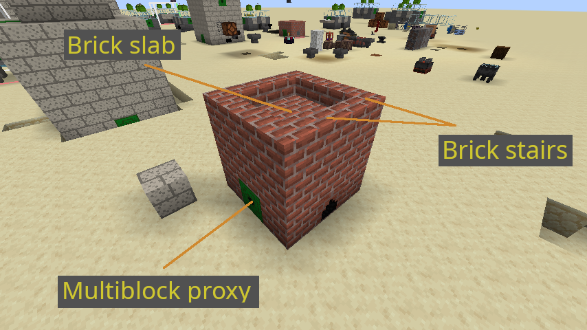
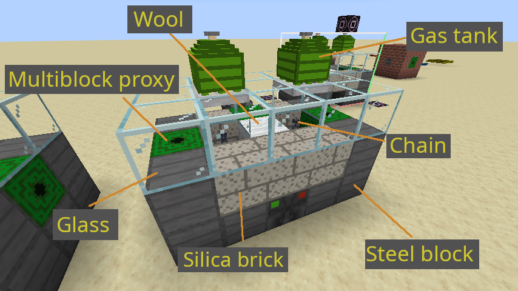

Welcome to the F-Tech information page. Here you will the find necessary info to progress in the mod. If you have JEI, you can view recipes from this mod.
Most items from this mod require titanium to make. Production of titanium is a complex process with multiple steps requiring several resources.
You will need to gather several minerals: quartzite, limestone, dolomite, halite and ilmenite. They can be found between -30 - 120 height in the world.
It's a mineral needed to make silica bricks that are used to build several structures in the mod. It is also used in production of ferrosilicon that is needed to make magnesium.
It's a mineral used in production of steel.
Halite is a salt mineral, used to produce chlorine.
Used to produce ferrosilicon.
Ilmenite is a mineral containing titanium. It needs processing.
Coke is needed in production of steel. It can be made in the coke furnace only from coal.
Several functional blocks in this mod are multiblocks - they require a structure to be built to function. When you place the main block, it will show a transparent preview of blocks needed to be placed around it. If a block placed is invalid, it will show a red cube. When the structure is complete, you will hear 2 beeps. If a structure becomes incomplete, you will hear 2 rough beeps.
Proxy is a block that interfaces with the main block for item, energy and fluid handling. It means you can insert and extract them through this block.
Produces coke from the coal.
Used to make ferrosilicon, magnesium and steel.

Used to heat up iron and steel for use in smithing. It takes time for the forge to heat up. The higher the temperature, the faster ingots are heated up.
You will need steel in crafting some items and building structures. You can make steel tool set from it in the fine anvil.
Used to make items from the hot ingots. You need to arrange hot ingots in the grid, then you need some strikes with a hammer on the anvil to make them.
Hammer is needed for metalworking in the anvil. Use it to strike on the anvil. A bar on the screen will show crafting progress.
Next step is processing raw ilmenite into titanium slag. It is done in the ore thermal furnace.
This block makes titanium slag from the ilmenite. It can also smelt metals a second faster than the vanilla blast furnace.

You need to produce chlorine from salt. First use a mixer to make brine, then process it in the electrolyzer.
Used to make brine from the salt chunks. You need to fill it with water and supply energy.
Energy can be produced in the combustion generator. It is the simplest generator.
Electrolyzer extracts chlorine from the brine. Supply brine through the left proxy. Supply energy through the back proxy. Chlorine will be deposited into the right gas tank.
When you made chlorine and titanium slag, you can process them in the fluid reactor to make titanium tetrachloride.
Used to make titanium tetrachloride, which is then used to make titanium ingots. Input fluid tank must be placed in the bottom center.

Now you need to make magnesium. First make ferrosilicon in the fine blast furnace, then make magnesium from it. When you got magnesium, you can now process it in the fluid reactor with titanium tetrachloride to make titanium ingots.
Next you will need 3D printer to make other items from this mod. To make 3D printer, you will need to make tempered glass from the regular glass. Once you made the printer, you will need to supply it with energy through the back proxy.

This item deletes liquids on right click. It is powerful, because water and lava frequently hide resources and inhibit movement.
Can throw ignited TNT.
Another powerful item that stores a spawner on right click.
Can store a mob that is not aggressive.
Can store any mob.
These combine axe, hoe, pickaxe and shovel functionality.
Steel torch can be placed on a block's bottom.
A shield with higher durability.
Can store gases from this mod. Currently, there is only one gas - chlorine. Right click on it with an item to show what it contains.
Can store liquids. Right click with an item on it to show what it contains.
More blast resistant glass.
Generates energy from fuel items.
Generates energy from food.
Generates energy from lava.
Generates energy from plant matter. Biofuel value of the item is shown in the tooltip.
Generates energy from honeycombs.
Generates energy from a player's experience. To add experience, stand on top of the generator.
Pumps liquids. Has configurable range. Needs pump pipes to reach the liquid below.
Destroys mundane blocks without drops and doesn't break ores. Doesn't damage entities.
Uses drills to break blocks and store their drops. Drills need to be placed adjacent to each other and one of them needs to touch the drill controller. Put drill bits into the drill controller, place an item container adjacent to it, supply energy and activate it with the button. When finished, drill controller can be broken without losing its drill bits.
An explosion resistant item container.
Used to teleport players to other teleporters. You can set a teleporter to be private or public. Needs energy.
Harvests and replants crops in a 9x9 area.
Harvests trees in a 9x9 area.
This table shows what player can craft with the items in his inventory and allows crafting them.
Has 3 slots for potion ingredients. When brewing, slots are cycled, so you can make 3-step potions. If an ingredient is taken out, used slot is set to first. Potion slots prevent extraction of water bottles and awkward potions. Insert ingredients from the top, extract potions from the rest slots.